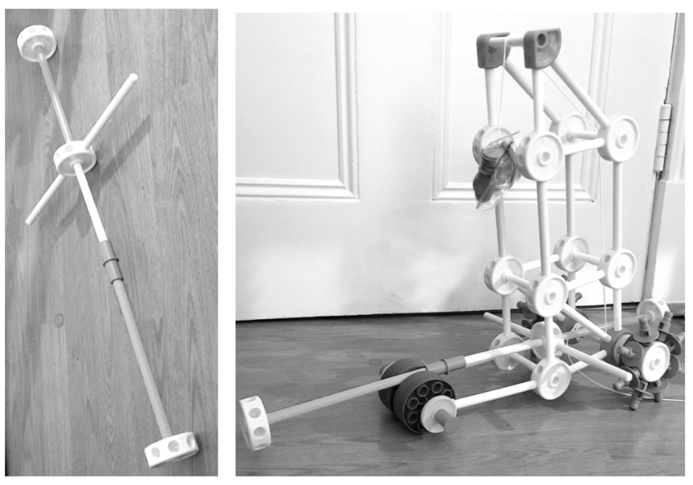
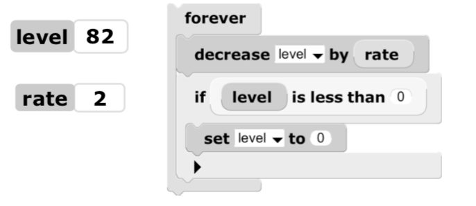
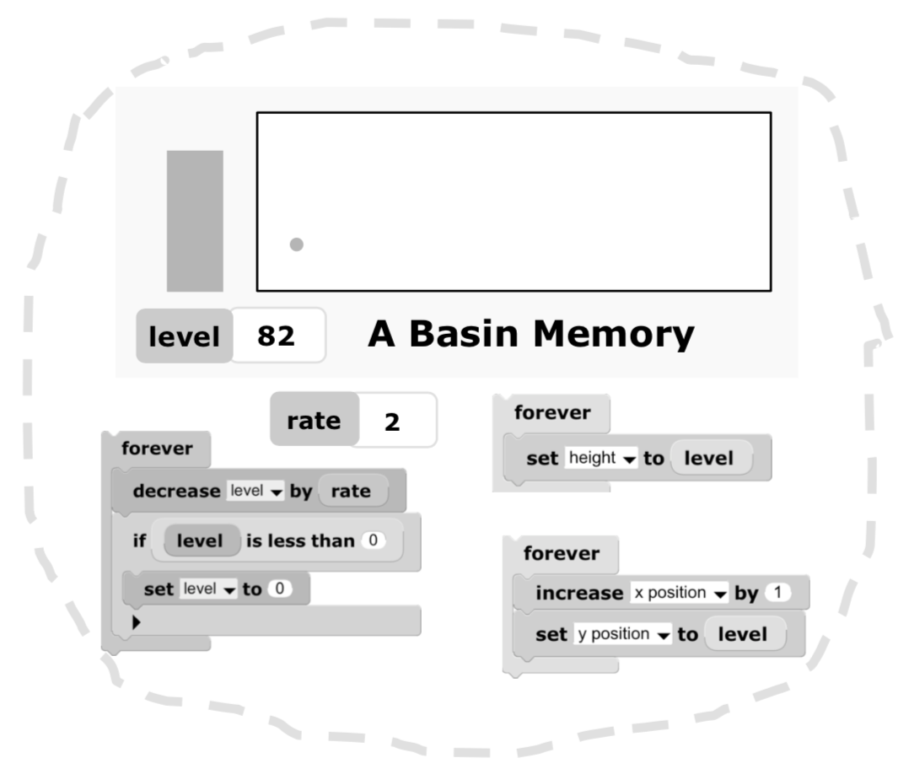

|
English | 日本語
|
|
 |
 |
| Alan Kay | "Programs... make things come to be, where nothing ever was before" |
Let me confess in advance: I love Marvin! I say this in the present tense because only his physical body passed away last year: Marvin lives on vividly in the minds of all who were fortunate enough to know him, both personally, and through his many talks and writings like the ones in this book. I think most people who read these will also come to feel they know him, as “the Marvin of Ideas” starts to live on vividly in their minds. As Mike Travers points out in his excellent introduction to this book, one of Marvin's main rules of thumb was that we should try to internalize great thinkers into our own minds in such a way that they can keep thinking to help us think. I'm going to try to do this—to “channel Marvin”—in this afterword.
I have especially loved this particular essay of Marvin's because he wrote it for child readers to help support a large vision he believed in: that if really understood and used well, the new medium of computing could make an enormous positive difference in helping them grow up with a much more powerful world view and mental tools for dealing with that world.
He appeals directly to children in his Preface because they had not yet committed to weak ideas about computers (and about much of the rest of the world). They were the most likely touchers of computers to be able to see more clearly what computers are really about, whereas most adults—including many computer professionals—have wound up adopting very weak notions about computing.
A key difficulty in learning “powerful ideas” is that we always start “where we are”, and we try to fit new ideas and things into what we already think we know. If the new ideas/things are very different, then we often either bypass them entirely, or we force them into distorted meanings that will fit our current “private universe”: the one between our ears! Marvin would like children to always have the thought: “I think this idea/thing is this way, but it could also be another way, and it could be made from things I'm not thinking about at all” (Marvin was great at this rule of thumb!)
Marvin uses analogies to TinkerToys because there is an amazing range of things that can be made from lots of just a few simple parts — very like bricks and other simple fundamental building blocks, and especially like “computer stuff”. Marvin was a fabulous TinkerToys builder as a child, and knew, as every child discovers, there is immense satisfaction in building something that turns out just right. The learning comes for free from the joys of happily focusing on making something neat. As Maria Montessori pointed out many years ago: “Play is the work of the child.”
The first thing we usually do with TinkerToys is to make structures that go beyond the parts. If we start fooling around with the parts we'll come up with something: I wound up with a skyscraper tower.
We can see right away that what's most important about TinkerToys are not the details of the components — the equivalent of bricklaying with bricks — but what we can make with the ideas we can explore and bring to life: towers, arches, vehicles, even new thoughts. Other construction materials will have their own basic components and ways to be put together. Most of the powerful ideas are in the designs of the combinations.
A good way to think of this powerful idea is: As more complex things are made, architecture dominates materials! In other words, what lies behind what we touch and think about, are often wonderful things that are mostly organizational in nature. As Marvin says in his Preface “What matters is how the parts affect each other, not what is inside them.”
Could our minds be such organizations? Could we make a mind by carefully organizing the simple stuff in computers?
Some of the parts allow movement, so we can make a toy vehicle that we can push or pull around.
Maybe a tractor with a cab?
Another powerful idea of TinkerToys is the “tinker” part. We don't have to have a big top-down plan (or even a little one) to get started. We play and try things with the pieces that we are fooling around with. At some point we form a vague concept—like “tower” or “tractor”—and this further helps us work between the concrete details of the parts and the larger concepts of the wholes.
TinkerToys allows us to “sketch” our ideas in 3D!

What about vehicles that are automobiles, that can “go by themselves”? TinkerToys does not provide direct ways to make such vehicles, but we can improvise them. For example, we can put the tower we made on our vehicle, make a weight from something heavy (like coins in a baggie) and use our string to wrap around the rear axle to be pulled and turned by the weight.
If we look at our self-powered vehicle, we can see that it is not smart enough to prevent itself from crashing into a wall or falling off a table. Could we make it smart enough to avoid these? And what do we mean by “smart”?
Marvin worked with Seymour Papert for many years in their joint quest for good working models of intelligence. They started looking beyond traditional programming and computing for better parts, organizations, and designs to make “thinking stuff”.
One source of inspiration came from the field of Cybernetics, which Marvin had delved into while in college, and especially from the autonomous and somewhat intelligent robot tortoises of Grey Walter, which could not just negotiate arbitrary complex environments, but could also learn a conditioned reflex (like Pavlov's dog). Marvin knew Grey Walter, and Walter's ideas helped the later Logo system for children.
Marvin and Seymour could see that most interesting systems were crossconnected in ways that allowed parts to be interdependent on each other—not hierarchical—and that the parts of the systems needed to be processes rather than just “things”. At the same time he wrote the Logoworks Preface, Marvin was writing a book about how minds might work—called “Society of Mind”—and said in the beginning:
“To explain the mind, we have to show how minds are built of mindless stuff, from parts that are much smaller and simpler than anything we'd consider smart. ... But what could these simpler particles be, the “agents” that compose our minds?
We've just made several TinkerToys that are more able than their parts. Can we use TinkerToys to make “agents” that are smarter than the agents that are their parts?
In order to make our self-powered vehicle smarter, we have to make it be able to sense what is going on enough ahead of time to make something happen that will cause the vehicle to stop before the disaster. One way to do this is to give it a “sensor probe” that will make contact with barriers in front of the vehicle, and connect the probe to a brake that will activate when the probe touches something. If we extend the probe out the back, then we'll also have a “prod sensor” that will release the brake when our vehicle is bumped from behind and prompt it to start up and move out of the way.
A third powerful idea about TinkerToys is that “tinkering” is often the entry into real engineering, math, and science. Engineering is not just to get something going at all, but taking the care to get it going nicely and stably, even elegantly. Math is a kind of science of “relations of relations” and its chains of lucid reasoning feel like the “engineering of ideas”. Science is the negotiations between the phenomena we experience and the ways we've invented to represent meaning in our minds.
Almost the limits of what can be done with TinkerToys are found in the “TicTacToe” playing computers done by Danny Hillis and Brian Silverman, then two of Marvin's students, who are now well known computer scientists.
These included many ideas that the inventors of TinkerToys never thought about!

The limits here are not logical—it is logically possible to build a whole computer in TinkerToys—but practical. TinkerToys have various kinds of errors, frictions, and other difficulties that add up to a frozen immobility after a point. The second simpler TinkerToys computer was done to minimize as many practical difficulties as possible.
Every child is very happy when they have a big idea, build it, and have just enough TinkerToys parts to make it! But then more parts are still needed because as ideas get built they also cause new and better ideas to appear.
One of the many wonderful things about computers—especially today—is there are always enough parts for any idea, and those ideas definitely cause more wonderful ideas to appear. There is essentially “no friction”, and no limits these days except for our imaginations.
A big idea here is that what the children are doing with toys like TinkerToys are “intellectually honest versions of what adults do”, in this case the “designing and building” parts of engineering and art. Most especially, the design process has not been removed from them by giving them prefabbed special parts and predone designs by others (as many contemporary “construction toys” today do). Too much prepurposing puts “success”, no matter how empty, ahead of the joyous struggles of learning and doing. Real learning of powerful ideas and the power that comes from them are the results of the big changes that happen in our minds as we struggle with, eventually grasp, and get fluent with, the difficult to learn ideas. Many “learning difficulties” are critically important! Seymour Papert called this “Hard fun!”.
Inspired by the robot tortoises of Grey Walter, a brilliant idea for Logo by Seymour and Marvin was to make a physical turtle for the children to program. Its “mind” would be supplied by programs they would write! This brings what Grey Walter did so cleverly with a few wires and vacuum tubes into their world in a real and deep way.
The combination of a physical turtle with a children's programming language brought the best of both worlds, and many interesting projects were invented, including making the turtle “more able” by telling it how to draw and do things—and for the children to learn real mathematics in the bargain (Papert). And also to make it “smarter” by having children build “little brains” for it to “think and learn with”—so the children would gain important insights into biology, psychology, themselves, and thinking itself (as Marvin and Pat Winston discuss insightfully later in this book).
For example, here is a simple Logo program — an “agent made from mindless actions” — to get the turtle to carry out the Grey Walter “explore” behavior:
Over and over, the turtle will go forward “a little” and then turn randomly somewhere between 45 degrees to the left and 45 degrees to the right.
I'm going to use a descendent of Logo—called GP for “General Purpose”—to do the rest of the examples in this Afterword, partly because it is easily accessed online through any web browser (all the examples here are online for you to play with at Marvin TinkerToys). GP uses drag and drop blocks programming to make it easier to write programs without having to worry about syntax errors, and it has several useful and more modern features in addition to what Logo provided. Here is the same “wander” program as done in GP:
This is more “able” than “smart” because it can be trapped by walls and other obstacles. Let's add in an “avoid” behavior to also run at the same time that will use the touch sensor to see if we've bumped into something, and if so we want to jump back.
Note that there is always a random turn whether going forwards or backwards, and this helps the turtle eventually get away from an obstacle.

Does the track of the turtle remind you of the much later “Roomba”? Two simple agents can make a lot happen!
This program uses the powerful idea of feedback, one of the foundations of Cybernetics that Marvin and Seymour thought about a lot. Feedback allows progress to be made without perfect knowledge of the future because the general corrections happen on the fly when a problem is sensed that couldn't be specifically anticipated.
What If Robots Thought More Like Animals?
This is a perfectly reasonable “robot” program. But what if we want to think about and understand how animals get around the world? What is an “intellectually honest form” for children to understand and make “animal behaviors”?
Even one-celled animals can “think a little”. And multi-celled animals have a nervous system whose connectivity and functionality can get very complex. For children 9-14 years old, we need to find good TinkerToys ways that are within their reach to help them think about animal thinking.
Thoughts like these were exciting us in the mid-80s right after Marvin wrote his Preface. We got very interested in the idea of having elementary school children learn about systems and ecologies by making models of large complex dynamic systems— such as cities and living things—in intellectually honest forms invented for children to get them immersed in some of the most important new ways of thinking and doing.
How animals behave and think is also the lead-in to Jerome Bruner's wonderful “Man, A Course Of Study” (MACOS) curriculum to help 5th graders learn an intellectually honest version of anthropology. (What makes us human? How did we get that way? How can we become more so?). MACOS was already being taught in the school in Los Angeles we were invited to work in (1). Our joint project with the school was called “The Vivarium”, and Marvin became one of its advisors.
Nervous systems are made from special cells called neurons. Some can sense and signal they've detected something, some can cause muscles to act, and some intermediate between senses and actions. Most animals have “avoid” behaviors when they touch barriers or smell noxious chemicals (and so do we). And most animals will “explore” when there is nothing more pressing to do (and so will we).
The beautiful, much studied sea snail nudibranch, with a simple nervous system of a few tens of thousands of neurons, has many behaviors, including “wander” and “avoid”. The “avoid” behavior's schematic “neural diagram”, might look like this:
There are “sensor neurons” S connected to the nudibranch's touch sensitive cells that can send signals to “motor neurons” M that will cause the nudibranch to behave.
There might also be connections to inhibit what is already going on—such as “wander” — to make a reaction to pain happen as fast as possible. We'll leave these out here.
We humans also have many sensory nerves to motor nerves connections that are just this simple and—just like the nudibranch—that run from a pain sensor in our skin and directly back out to the muscles in our arm to produce a quick response.
The connections that cause the quick jump back happen in our spine, and the messages that are sent to the brain about this get there much later.
In this light, let's rewrite our previous turtle scripts to look a little more biological. One way to help think about this is to cast the diagram into two main parts:
There is a “sensing process” that pays attention to sense organs that will send a “fire” message to its connections if something has been sensed. There is a “motor process” that will cause muscle fibers to contract to jump back if it receives a “fire” from synapses attached to it. We can treat the whole diagram above as TinkerToy parts if we drop the images into GP and then write scripts to give them behaviors.

Now let's move the parts of the diagram so they touch.

We can write scripts to route the sensing of a nudibranch bumping into something through the sensory neurons to the motor neurons to the muscles that will cause a jump backwards.
We want to move the animal around its environment as we did with the turtle, and still connect to the neurons. This is easy with a script, and we can use “rubber band lines” to visually connect the body of the creature to the diagram. We'll also drop in a barrier for the animal to bump into to test our scripting.

Now we'll write the scripts, and change the nudibranch's appearance to a top view.

Starting at the bottom left is the send to the sensory neurons when the body of the nudibranch runs into something. The sensory neurons tell the motor neurons, and they in turn fire off the muscle fibers to make the animal jump back. That brings us full circle to making the body of the animal move in our simulation. We test it and it works nicely. The last part of this project is to hide the scripts, put in more obstacle objects in the world, and turn our creature loose!


Finally, let's add a little script so we can also have a mouse click (a gentle “kick”?) be sensed as a barrier.

One fun thing we wound up doing while debugging this example, was to play musical tones in each of the scripts. This slowed everything down (the tones were set to play for 1 second), and the melody we heard was the actual sequence of actions (Marvin would have loved this!) Here is the actual motor neuron script.
How Do Animals Learn?
So far so good, but we can see that both Grey Walter's tortoise and our nudibranch will still fall in a hole. Grey Walter would go over and gently kick his tortoise to invoke the “avoid” behavior to back away. But he realized that it would be more fun to make a “better tortoise brain” that could learn by training to associate one signal—such as the noise of a whistle—with the “avoid” action prompted by the touch sensor so it would learn that the whistle meant “obstacle”.
So if he blew a whistle and kicked the turtle a number of times it could gradually learn that the whistle meant “kick” and to do the backing away action. He came up with a mechanism to detect if both a kick and a whistle were happening close in time; and if so, to remember if enough of the pairings happened within a reasonable time, and if so, to remember for a much longer period to do the “avoid” action when just the whistle is blown. This will be a fun project to do here with our nudibranch!
Associative learning works in animals partially because biology tends to overdo things, in this case by making lots of connections during the development of most nervous systems. We can see that this is a very good strategy because it is quite hard for the genes themselves to learn, so an early powerful developmental “invention” was to over-proliferate, test the resulting organization, and trim back in various ways to retain what works well (this is like the powerful idea of having lots of ideas plus debugging, rather than trying to have just one great idea right off the bat). If the connections could be weakened and strengthened on the basis of experience, then some of what the genes found hard to learn could be picked up by the organism via its life experiences.
In the sea snails and slugs—our beautiful nudibranch for example—there are weak connections from other senses—from its many smell sensors, or the light or dark sensing by the animal's weak eyes. There are many interneurons I from various sensors and between themselves to many synapse “bulbs” including the ones from the eye.

When a light is flashed there is almost no response. If we repeatedly flash the light and prod the touch sensor soon afterwards, at some point just flashing the light will evoke the “avoid” response. The animal has learned that “light flash” means “bump”. The learning will last for hours and often days. This is the same kind of learning we are familiar with from the story of Pavlov's dog learning that a bell sound means “food” with lots of saliva as the result. And this is the same kind of learning that Marvin studied and made a model of for his PhD thesis!
In our GP nudibranch it is easier to use sound than light, so we'll see if we can get our nudibranch—like Grey Walter's tortoise—to learn that a sound means “bump”!
The association comparisons and the learning and memory of them take place in the “bulb” of the sensory neuron that attaches to the motor neuron. It is this that “notices”, and changes to strengthen the synapse when there is activity in the side connection. (2)
We can make some sketches to help us think about how this might work inside the bulb, and we'll use Grey Walter's approach to get started.
If the touch and the sound are fleeting, then it will be hard to perceive coincidence. But if we can remember one of the events for a short period, it will be much easier to check (we'll choose to remember the sound-event).

I like to think via making pictures of behavior over time. For remembering sounds, we want a spike that rapidly decays on every sound-event, but is wide enough to provide a “window” to see if a bump event has also happened.

Then I like to scrawl the gist of the main process in a script to the left of the sketch (here I'll put it under the sketch). We want to wake up (3) when there is a sound-event, and set the sound memory to its max (100 is our arbitrary choice for this). We want the sound memory to automatically die away to give the behavior shown in the time picture (we'll have the sound memory do this for us).

If we decided a coincidence was significant from just one happening, then we'd be very superstitious! We want to remember the coincidences that happen closely in sequence. One way to do this is with a slower memory that we can boost a little for each coincidence. Each little boost makes a stair step up while the memory is decaying. The scrawlscript for this is very simple: if there is something in the sound memory when a kick happens then we want to increase the coincidence memory.

If a lot of these happen in a row, the quantity of the memory will climb. If this gets higher than a threshold we choose—let's say “80”—then we can conclude “significance” and remember this in a much longer-term learning memory.
This is perhaps the simplest scrawlscript.
Just from looking at these sketches, we can see that the memories are quite similar – they differ only by their rate of decay (forgetting).
The fun thing (and the carrot on the stick that will motivate us to make the memories) is that the “conditioned reflex” itself is just one more little script! If there is something in the learning memory, then a sound-event will send a “fire!” to the Avoid motor neurons.
We can now put these in a sketch of the bulb to see a “map of the whole idea”.
The two big insights here are (a) this is very straightforward if we have the memories, and (b) the three memories are identical except for their decay rates.
A sketch like this is a map of our intentions and a way to help us remember in the large what we are trying to do. Working in the rough—as with TinkerToys and sketching— helps us to find workable visions of what we are trying to make. We often can't define from the top-down, but we can explore the unknown territory to find the possibilities.
(3) In my “scrawlscripts” I like to use
 to mean "always running/active". ↑
to mean "always running/active". ↑
Memories Are Made Of These
For a memory, we need something that we can change, that we can test, and that we can make diminish at some rate.

This sounds a lot like a toilet! Or at least like the tank of a toilet! Or a water basin. The water level represents the quantity of the memory.
And it needs a float to measure the height of the water (perhaps to make something happen if it gets high enough—and certainly to turn off the inputs before overflowing)!
One way to not get overwhelmed by detail when modeling is to first capture the essence of each idea without worrying about the next lower level details.

For example, the essence of a simple basin can be captured just by a number that represents the level of liquid it contains, and a process that will act as an open drain: so will decrease the number at some rate over time to 0 but no less.
In GP we get a variable, call it “level” then write a drain script to go no lower than 0. We can clearly see that this script would be much more flexible if we made another variable for “rate” and used that in the script instead of just picking “2”.
Now it's easy to make our visualization over time.
Since every object in GP is also a turtle and has a pen, it is very easy to create the essence of a graph over time. We make a “dot sprite” with some paint, and get a rectangle to draw on. The script moves the dot to the next position to the right each time (increases the x position), and goes vertically (the y position) to the height given by level.

Finally, it might be fun to make a dynamic picture of the basin. The essence of this could be a rectangular bar whose height is set to the level.
We have quickly TinkerToyed together a version of the memories our map called for. Now we want to “promote” the whole thing into a GP part so we can make more instances of this construction:
We'll add a label, and then “package” the view we'd like to see of our memory when we make an instance of the memory part.
After playing with these awhile, we can add in a few more niceties involving the look of the bar (if we put a shape around it we can emphasize its basin-like nature), and we can include the simple wrap-around behavior for the time grapher.

An instance of our memory part will now look like the sketch in the map:
One of the most powerful abilities of computers is to be able to treat any organization of its stuff as a whole new “part” and to make instances of them in unlimited number. For example, all the letters I'm using to write with are instances of “letter parts” and all the “a”s in the Garamond font that I'm using are instances of both the idea of “a” and a particular visual form for “a” (4).
Getting The Nudibranch To Learn
Now let's create three instances of our new TinkerToyed memory part in GP to get the memories we need, and to get started on the scripts.
We take a peek at the sketch map we made to remember how we imagined the four simple agents that will make the learning process.
Now, all we have to do is to turn the four scrawlscripts into actual GP scripts, and we'll have turned our map into a working conditioned reflex learner.

The last script is very simple, but also profound. It says that if it has been determined that the sound is a significant part (a warning!) of a bump, and if this has not yet been forgotten by the long term learning memory, then substitute the sound for an actual bump and do the abrupt avoidance behavior. In other words, the sound has become a symbol for “bump”, and the sound will now cause a flinch without any barrier in sight.
We can see that associated learning can be made from just a few simple mechanisms organized to notice, judge, learn, and remember. Marvin wanted to show “how minds are built of mindless stuff, from parts that are much smaller and simpler than anything we'd consider smart”, and we've just made a children's example that does just this for a very simple mind. We didn't need an electronic digital computer to do this (we could have done this completely mechanically with basins or balloons and parts like TinkerToys). Or we could have used the machine that Marvin built for part of his Math PhD thesis at Princeton in 1954 — the wonderfully named “SNARC” (5) — that was one of the very first “neural net” machines with 40 “neurons”, each one using the very same ideas that we've just built. It didn't use TinkerToys, toilet tanks, or computers, but was made from simple electrical and mechanical materials of that time.
The flip-side of tinkering is that deep invention and discovery has proved to be quite difficult even for geniuses, and so learning what great minds have done in the past has been one of the most powerful ideas for making progress in ideas and art. Picasso's resolution of the seeming conflict between knowledge and creativity was: “Learn the rules like a pro, so you can break them like an artist!”. Here, we were greatly aided and inspired by how Grey Walter approached the problem of making a conditioned reflex in the 1940s from a few vacuum tubes. The use of skilled knowledge is not antithetical to creativity if treated as “materials and tools” rather than “dogma”. Children need to discover, and they also need help to discover. Their learning environments must foster both.
The most human of human thinking is much more complex than associative learning. But a lot of our brain - minds are made from these older simpler reflex reactions and associations based on repeated coincidences (6). Some of the tragedies of Post Traumatic Stress Disorder are almost identical associations between loud sounds and reactions to danger. It's hard to shake because it is not based on conscious high-level thinking. This makes de-conditioning even more difficult than the initial associations.
Despite the higher level thinking we've learned how to do, it's startling that so much of what we do when we “think we are thinking” is to freely substitute quite arbitrary signals—as symbols—as being equivalent to something else entirely. Stories and theater depend on this, and so do religion and writing, and the use of mathematics in science. So do many people's reactions to “flag burning”, to high offices and rank, etc. It's eerily similar to what the simplest animals can learn (and for good reason).
Can we learn to not reflexively make the substitutions when it's dangerous to do so?
(6) See Daniel Kahneman “Thinking: Fast and Slow” for a larger view of how fast non-cognitive "thinking" happens at human levels. ↑
The Ultimate TinkerToy is the Ultimate ThinkerToy
We can see why Marvin used TinkerToys as an analogy in his Preface about the nature and powers of children “making things come to be where nothing ever was before” via designing and programming. We make not just to have, but to learn. First with our hands and eyes that we can feel and see, and then with steps back to think more deeply: from “tinkering” to “pondering”. Adding the computer allows us to turn our handmade things and ponderings into dynamic behaviors to give us qualitatively more to think about. Not just “TinkerToys”, computers are “ThinkerToys”!
In doing this we are following in a long tradition that Marvin had a part in, which started with Sketchpad, the invention of modern interactive graphical computing by Ivan Sutherland in 1962. Ivan's advisors were Marvin and Claude Shannon.

We can see today's personal computing here! Just as the rough sketch of a bridge was easily transformed by Sketchpad 55 years ago into a dynamic simulation of the bridge that calculated the stresses and strains as well as showed its appearance, today we can have children drawing diagrams of animal neural structures, making them work, and trying them out in simulated animals. Sketchpad was done on a supercomputer the size of a football field. Today's children have vastly more computer power at their disposal on their personal laptops costing just a few hundred dollars, and are the size of just the Sketchpad display (the football-field-sized computer is now on the back of the display, and much faster!).
Marvin also had a part in how laptops and children's computers came about. When I was in grad school at the University of Utah in 1968, Marvin gave an exciting talk at a nearby educational computer conference, and much of it (7) was about Seymour Papert and his ideas about helping children learn powerful ideas.
Later that year I visited Seymour's and Cynthia Solomon's Logo classroom outside of Boston, and what they were doing blew my mind—and still to this day!
On the plane back to Utah, I made this sketch of “a personal computer for children of all ages”: a “dynamic medium for creative thought” inspired by Sketchpad, Logo and other ideas from our research community. This was part of what grew into the personal computers, laptops, and tablets we now use.

The children of 2018, learning about how conditioned reflexes work by programming working models that bring their sketches to life, are using ideas and technologies directly descended from Ivan, Marvin, Seymour, Cynthia and the other pioneers of that time. The examples in this note show that what's really important about computers, and especially for children, is how they can go beyond imitating conventional media to give rise to new and dynamic ways to represent ideas, understand and learn complex systems, model scientific theories, and create new art and artifacts that cannot exist without them.
In other words, the computer is an instrument whose music is ideas. Its great importance is that so many of the powerful ideas we humans need to understand are best expressed and learned through it. We need to help children learn and use the most powerful ideas of humanity to advance civilization, and insightful use of the computer can make a qualitative difference in what and how they can learn, and how well.
What do you think children should be doing with their computers?
Acknowledgements
I am deeply indebted to John Maloney for extensive help in shaping the computer examples in GP, and for very helpful critiques of the writing. To Yoshiki Ohshima for valuable insights. To Mike Travers, who pioneered many of the ideas for modeling animal minds for children. And I'd also like to thank K-5 instructional technology teacher Jen Lavalle for a careful critique that increased clarity and understandability. Most of all I want to thank the many dedicated teachers we've worked with over the years— we've learned a lot from you!
Finally, thanks to Cynthia Solomon and Margaret Minsky for inviting me to write this Afterword to one of my favorites of Marvin's writings. And it's been great to join my friends and colleagues of many years (many decades!) to celebrate one of our most delightful and influential mentors. It's been a lot of fun putting this together!
References
- Hal Abelson, Andy diSessa, Turtle Geometry
- Jerome Bruner, Towards a Theory of Instruction
- ________, The Relevance of Education
- ________, MACOS Occasional Paper, ....
- Dewdney, The TinkerToy Computer
- Donald Hebb, The Organization of Behavior
- Peter Dow, Schoolhouse Politics
- Danny Hillis, The Pattern On The Stone
- Daniel Kahneman, Thinking: Fast and Slow
- Eric Kandel, et al. Principles of Neural Science
- Alan Kay, Microelectronics and the Personal Computer, Scientific American, Sept 1977
- ________, Networks, Computers, and Education Scientific American, Sept 1991
- ________, Adele Goldberg, Personal Dynamic Media, IEEE Computer March 1977
- David Macauley, Cathedral
- ________, The Making Of The Book “Cathedral”
- John Maloney, GP http://gpblocks.org
- Marvin Minsky, Preface To Logoworks
- ________, The Society of Mind
- ________, Form and Content in Computer Science, Turing Award Lecture, 1970
- ________, Computation: Finite and Infinite Machines, 1967
- Seymour Papert, Teaching Children to be Mathematicians vs Teaching Them “Math”
- ________, Cynthia Solomon, 20 Things To Do With A Computer
- ________, Mindstorms 1980, later thoughts about children and computers
- Brian Silverman, Logo MicroWorlds Reference Manual
- Cynthia Solomon, book
- Mike Travers, theses ...
- Grey Walter, An Imitation of Life, Scientific American, May 1, 1950
- ________, A Machine That Learns, Scientific American, Aug 1. 1951
- ________, The Living Brain, Norton, 1953
- Norbert Wiener, Cybernetics
- Patrick Henry Winston, Learning Structural ... from Examples,
- ________, Introduction to Education and Psychology (chapter, this book).